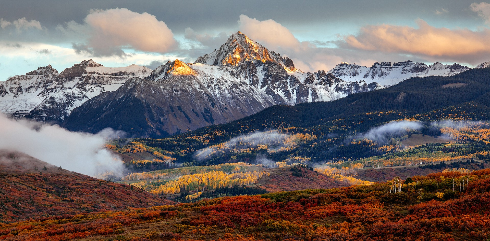

Colorado is located in the western area of United States. It is one of the mountain states thats sharing the four courner regions with Arizona, New Mexico and Utah. Colorado is boasted about it's diverse landscapes of mountains, forests, highplains, canyons, rivers and even deserts. It encompasses most of the Southern Rocky Mountains, as well as the northeastern portion of colorado plateau and the western edge of Great Plains. Colorado is the eighth-largest U.S state by area and the 21st by population.
The region has been inhabited by Native Americans and their ancestors for the past 13,500 years and possible much longer. The eastern edge of the Rocky Mountains was a major migration route for early peoples who spread throughout the US. the Pike's Peak Gold Rush of 1858-1862 created an influx of settlers. On February 28, 1861, President James Buchanan signed an act creating the territory of Colorado and on August 1, president Ulysses S. Grant signed the proclamation 230, admitting colorado to the union as the 38th state. The spanish adjective "colorado" means "colored red". Colorado is nicknamed the centennial state because it became a state 100 years after signing the Declaration of Independence.